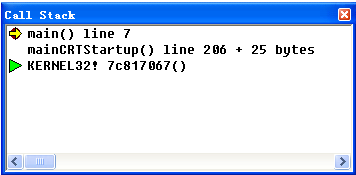
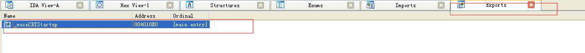

在C/C++语言中规定，程序是从main函数开始，也就是C/C++语言中以main函数作为程序的入口，但是操作系统是如何加载这个main函数的呢，程序真正的入口是否是main函数呢？本文主要围绕这个主题，通过逆向的方式来探讨这个问题。本文的所有环境都是在xp上的，IDE主要使用IDA 与 VC++ 6.0。为何不选更高版本的编译器，为何不在Windows 7或者更高版本的Windows上实验呢？我觉得主要是VC6更能体现程序的原始行为，想一些更高版本的VS 它可能会做一些优化与检查，从而造成反汇编生成的代码过于复杂不利于学习，当逆向的功力更深之后肯定得去分析新版本VS 生成的代码，至于现在，我的水平不够只能看看VC6 生成的代码
首先通过VC 6编写这么一个简单的程序
1 |
|
通过单步调试，打开VC6 的调用堆栈界面，发现在调用main函数之前还调用了mainCRTStartup 函数:

在VC6 的反汇编窗口中好像不太好找到mainCRTStartup函数的代码，因此在这里改用IDA pro来打开生成的exe，在IDA的 export窗口中双击 mainCRTStartup 函数，代码就会跳转到函数对应的位置。

它的代码比较长，刚开始也是进行函数的堆栈初始化操作，这个初始化主要是保存原始的ebp，保存重要寄存器的值，并且改变ESP的指针值初始化函数堆栈，这些就不详细说明了，感兴趣的可以去看看我之前写的关于函数反汇编分析的内容：
C函数原理
在初始化完成之后，它有这样的汇编代码
1 | .text:004010EA push offset __except_handler3 |
这段代码主要是用来注册主线程的的异常处理函数的，为什么它这里的4行代码就可以设置线程的异常处理函数呢？这得从SEH的结构说起。
每个线程都有自己的SEH链，当发生异常的时候会调用链中存储的处理函数，然后根据处理函数的返回来确定是继续运行原先的代码，还是停止程序还是继续将异常传递下去。这个链表信息保存在每个线程的NT_TIB结构中，这个结构每个线程都有，用来记录当前线程的相关内容，以便在进行线程切换的时候做数据备份和恢复。当然不是所有的线程数据都保存在这个结构中，它只保留部分。该结构的定义如下:
1 | typedef struct _NT_TIB |
这个结构的第一个参数是一个异常处理链的链表头指针，链表结构的定义如下:
1 | typedef struct _EXCEPTION_REGISTRATION_RECORD |
这个结构很简单的定义了一个链表，第一个成员是指向下一个节点的指针，第二个参数是一个异常处理函数的指针，当发生异常的时候会去调用这个函数。而这个链表的头指针被存到fs寄存器中
知道了这点之后再来看这段代码，首先将异常函数入栈，然后将之前的链表头指针入栈，这样就组成了一个EXCEPTION_REGISTRATION_RECORD结构的节点而这个节点的指针现在就是ESP中保存的值，之后再将链表的头指针更新，也就是最后一句对fs的重新赋值，这是一个典型的使用头插法新增链表节点的操作。通过这样的几句代码就向主线程中注入了一个新的异常处理函数。
之后就是进行各种初始化的操作，调用GetVersion 获取版本号，调用 __heap_init 函数初始化C运行时的堆栈，这个函数后面有一个 esp + 4的操作，这里可以看出这个函数是由调用者来做堆栈平衡的，也就是说它并不是Windows提供的api函数（API函数一般都是stdcall的方式调用，并且命名采用驼峰的方式命名）。调用GetCommandLineA函数获取命令行参数，调用 GetEnvironmentStringsA 函数获取系统环境变量，最后有这么几句话:
1 | .text:004011B0 mov edx, __environ |
这段代码将环境变量、命令行参数和参数个数作为参数传入main函数中。 在C语言中规定了main函数的三种形式，但是从这段代码上看，不管使用哪种形式，这三个参数都会被传入，程序员使用哪种形式的main函数并不影响在VC环境在调用main函数时的传参。只是我们代码中不使用这些变量罢了。
到此，这篇博文简单的介绍了下在调用main函数之前执行的相关操作，这些汇编代码其实很容易理解，只是在注册异常的代码有点难懂。最后总结一下在调用main函数之前的相关操作
- 注册异常处理函数
- 调用GetVersion 获取版本信息
- 调用函数 __heap_init初始化堆栈
- 调用 __ioinit函数初始化啊IO环境，这个函数主要在初始化控制台信息，在未调用这个函数之前是不能进行printf的
- 调用 GetCommandLineA函数获取命令行参数
- 调用 GetEnvironmentStringsA 函数获取环境变量
- 调用main函数